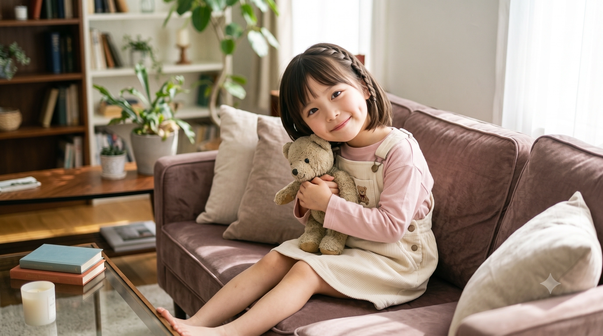

🛠️ [동구대 산업디자인학과] 제38회 졸업작품전시회 '기적의 추추추합' 절찬 전시 중!
1. 개요
"마음을 빛내는 용기의 뱃지! 도소영의 구호는 체스토-!"
동구대학교 산업디자인학과에 재학 중인 대학생. 작중 'Love Live! Hasunosora Girls' High School Idol Club(하스노소라)'의 104기생 카치마치 코스즈와 완벽하게 일치하는 기믹, 가족 관계, 생일, 긍정적인 '체스토' 마인드를 모두 갖춘 '현실판 코스즈'다.
효빈광역시 '지아센(지역아동센터) 5인방'의 일원으로, 유세라보다 한 살 많은 언니 포지션이다. 평소에는 다람쥐처럼 순하고 소심한 성격의 소유자이지만, 동지들이 위기에 처하거나 모욕을 당할 때는 억눌렸던 분노가 폭발해 물불 가리지 않고 돌진하는 반전 매력을 지녔다.
또한 지아센 5인방 중에서 신체적으로 가장 '평균'에 가까운 체형을 지녔으나, 이는 어디까지나 글래머러스함이 과도하게 발달한 5인방 내부 기준일 뿐이다. (돌케스트라의 코스즈가 그룹 내 평균이지만 절대 작은 편이 아닌 것과 같은 결이다.) 덕분에 시장실 난입 당시 박효빈 시장이 그나마 소영에게 눈을 두려고 시도했으나, 결국 안심하고 시선을 고정할 수 없어 천장 몰딩을 보게 만든 또 다른 원인 제공자이기도 하다.
지금은 언제나 밝게 "체스토-!"를 외치며 목공 작업과 챌린지를 즐기는 에너지 넘치는 미대생이지만, 초등학교 시절에는 효빈시 최악의 마굴 족포초등학교에서 끔찍한 학교 폭력을 당하며 스스로 삶을 포기하려 했던 가슴 아픈 과거를 지니고 있다. 하지만 방과 후 지역아동센터(지아센)에서 당시 대학생이던 박효빈(현 효빈광역시장)을 멘토로 만나면서 인생이 180도 바뀌었다. 박효빈의 극대노 섞인 보호와 헌신 덕분에 지옥 같던 족포초를 벗어나 당가동으로 무사히 탈출할 수 있었고, 이후 잃어버렸던 미소와 자신감을 완벽히 되찾았다. 애니 코스즈보다는 그래도 학업에 노력을 더 기울여서 동구대학교 산업디자인학과에 무려 '추추추추추추추추추추추합'이라는 전무후무한 우주의 기운(?)으로 막차를 타고 입학, 현재는 동구대 4인방(오마리, 하마루, 성공린, 오하리)과 어울리며 대학 생활을 100% 즐기고 있다.
2. 카치마치 코스즈와의 소름 돋는 평행이론
2.1. 이름의 언어유희 (도소영 = 도정소령)
이름부터가 우주가 점지해 준 운명이다. 카치마치 코스즈의 한자는 도정 소령(徒町 小鈴)인데, 도소영의 성씨인 '도(都)'가 카치마치(도정)의 앞 글자와 발음이 같고, 이름인 '소영'은 소령(코스즈)과 한 끗 차이로 완벽하게 비슷한 발음을 자랑한다. [1]
2.2. 애너그램 생일과 대가족 설정의 현실화
애니 코스즈의 생일은 2월 28일(02-28)인데, 도소영의 실제 생일은 이를 정확히 거꾸로 뒤집은 8월 22일(08-22)이다. (이쯤 되면 하화연, 임은혜와 함께 생일 애너그램 3대장이다.)
가장 소름 돋는 것은 '10명의 대가족' 설정이다. 애니 코스즈가 부모님, 조부모님, 큰언니, 작은언니, 삼촌네 등 10명과 북적이며 산다는 설정이 있는데, 현실의 도소영 역시 정확하게 10명의 친척이 한 지붕 아래 모여 사는 거대한 뼈대(?) 있는 대가족의 막내딸이다. 명절이 되면 집안이 흡사 시장통처럼 변하지만, 소영은 이 북적임을 매우 사랑한다. [2]
2.3. 우주의 기운이 도운 동구대 "추추추추추추합"
애니 코스즈가 하스노소라 수험 당시 예비 번호 끝자락으로 아슬아슬하게 합격해 '바보' 취급을 받는 기믹이 있다. 도소영 역시 애니 속 코스즈보다는 공부를 조금 더 열심히 하긴 했지만, 동구대 합격권에는 살짝 모자란 점수였다.
하지만 특유의 타고난 손재주와 압도적인 실기 깡패 모드로 무장하여 산업디자인학과 수시 실기 전형에 도전했고, 발표일 당일 무려 "추추추추추추추추추추추합(전화 찬스 마감 5분 전)"이라는 기적적인 막차를 타고 동구대에 합격하는 신화를 썼다. [3] 본인 피셜 "우주의 챌린지 에너지가 나를 도왔다"고 한다.
3. 족포초등학교의 지옥과 박효빈 멘토 (눈물의 서사)

▲ 엘린지역아동센터 시절, 낡은 노트를 안고 상처로 가득했던 어린 도소영
3.1. 마굴 족포초: "장애새끼"라는 모욕과 피눈물의 절망
어릴 적 효빈시 서구 사복동에 살았던 도소영은, 운명의 장난처럼 효빈시 최악의 마굴이자 학교 폭력의 온상인 족포초등학교에 배정받았다. 이놈의 학교는 왜 이쪽 애들만 보면 잡아먹으려 안달인지 모르겠다.
소영은 당시 낯가림이 심하고 대인관계에 서툴렀으며 공부를 조금 어려워했는데, 족포초의 쓰레기 같은 일진 무리들은 이를 놓치지 않았다. 그들은 소영을 포위하고 "야 장애새끼야, 얼굴도 좆같이 생긴 년이, 너 자폐지?"라는 입에 담기도 힘든 장애인 비하와 쌍욕을 퍼부으며 매일같이 집단 괴롭힘을 일삼았다. (당연히 소영은 자폐가 아니었으며, 얼굴도 귀여운 다람쥐상 미소녀였다. 정작 본인들이 거울 치료가 시급한 오크들이었다. 마음은 더더욱 썩어 문드러진 폐기물들이었고.)
괴롭힘의 수위는 날이 갈수록 잔인해졌다. 그들은 소영의 유일한 안식처이자 도피처였던 스케치북을 빼앗아 눈앞에서 갈기갈기 찢어발겼으며, 화장실에 갈 때마다 실내화를 쓰레기통에 쳐박거나 복도에서 고의로 어깨를 퍽 밀치고 지나가는 물리적 폭력을 일삼았다.
이 잔혹한 폭력을 견디다 못한 소영이 눈물로 범벅이 된 채 교무실로 찾아가 담임 교사에게 살려달라고 매달렸다. 하지만 하필 담임마저 심각한 병신(직무유기 쓰레기)이었다. 교사는 억울해하는 소영을 향해 귀찮다는 듯이 혀를 차며 이렇게 뱉었다. "도소영, 네가 평소에 너무 음침하게 굴고 애들이랑 어울리려고 노력을 안 하니까 애들이 장난치는 거잖아. 별일도 아닌 걸로 선생님 피곤하게 하지 마."
보호받아야 할 유일한 울타리였던 교사의 이 끔찍한 2차 가해와 가스라이팅은 어린 소영의 정신을 완벽하게 붕괴시켰다. 결국 초등학교 3학년의 어린 소영은 "나는 할 수 있는 게 없어. 특기도 없고, 쓸모없는 사람이야. 내가 죽어도 남이 슬퍼나 할까?"라는 극단적인 우울감과 자기 파괴적인 자기암시에 빠지고 말았다. 이 지독한 방관과 절망의 기억은 소영의 영혼을 시커멓게 갉아먹고 있었다.
3.2. 1주일 차의 충돌: "위선자 새끼야!" 그리고 멘토의 호통
이 지옥 같은 시기, 소영은 방과 후 엘린지역아동센터(지아센)에 다녔다. 그곳에서 멘토링 알바를 하던 15학번 대학생 박효빈을 처음 만났다. 하지만 어른에 대한 불신이 극에 달해 있던 소영은 벼랑 끝에 몰린 고슴도치처럼 맹수처럼 이를 드러내며 멘토를 밀어냈다. 이때 박효빈은 소영이가 너무 다루기 힘들어 '첫날부터 제대로 현타 온다'며 멘붕에 빠졌다고 한다.
센터 근무가 1주일~4개월 차로 접어들던 시점, 박효빈 역시 한계에 몰려 있었다. 같이 근로장학생으로 온 15학번 동기 '먼지'와 '경영15병신'은 아이들이 밥을 굶든 말든 스마트폰만 쳐다보고, 심지어 사범대와 상경계열이면서 초3 수학 '들이(L, mL)' 문제도 못 푼다며 사회복지학과인 효빈에게 짬처리를 시전하는 폐급 중의 폐급이었다. [4]
극심한 피로와 사내 괴롭힘 속에서도 효빈이 굳은 표정을 풀고 다가가 소영에게 수학 문제집을 펼쳐주려던 날이었다. 억눌려 있던 아이의 절망과 분노가 일순간에 폭발했다. 연필심이 부러지도록 바닥을 찍으며 소영이 핏발 선 눈으로 쏘아붙였다. "왜 자꾸 나한테 귀찮게 굴어요?! 저리 가라고요!! 이딴 거 풀어서 뭐 하는데요?! 구구단 외우면 학교에서 애들이 나더러 장애새끼라고 침 안 뱉어요?! 어차피 난 아무것도 못 하고 평생 쓸모없는 쓰레기로 살 건데, 왜 자꾸 착한 척 위선 떨면서 나한테 이래라저래라 하냐고요!! 꼴 보기 싫으니까 저리 가요, 위선자 새끼야!!"
가난과 폭력에 짓밟힌 여덟 살 아이의 입에서 튀어나온 처절한 비명에, 효빈의 머릿속 퓨즈도 끊어지고 말았다. 효빈은 책상을 손바닥으로 쾅 내리치며 벼락같이 포효했다. "누가 너더러 쓰레기래?! 네가 뭔데 네 입으로 네 인생을 쓰레기통에 처박아!! 세상이 너한테 억울하게 군다고 해서, 너까지 네 인생을 개판으로 집어던지면 그게 정답이야?! 네 상처가 아무리 커도, 널 도와주려는 사람의 진심까지 쓰레기로 짓밟을 권리는 너한테 없어!!"
공부방 전체가 얼어붙은 이 호통에는 아이를 향한 비하가 단 한마디도 없었다. 오롯이 아이의 비틀린 자기 파괴를 향한, 파멸을 막고 싶어 하는 멘토의 처절한 진심이었다. 직후 효빈은 복도로 나가 찬물로 세수를 하며 이성을 되찾았고, 다시 돌아와 소영의 눈높이에 무릎을 꿇었다. "선생님이 요즘 몸도 힘들고 스트레스가 쌓여서... 너한테 너무 감정적으로 언성을 높였어. 어른답지 못했어. 진심으로 사과할게. 미안해. 하지만 넌 절대 쓸모없는 아이가 아니야. 네가 네 손으로 세상한테 지지 않으려면 최소한 네 몫의 계산은 해내야 해. 쌤이 끝까지 네 편 해줄 테니까 포기하지 말자." 자신을 윽박지르기만 하던 어른들과 달리, 자신의 잘못을 인정하고 진심으로 고개를 숙이는 멘토의 모습은 소영의 견고했던 마음의 방화벽을 완전히 박살 내는 결정적인 변곡점이 되었다. [5]
3.3. 지아센에서의 우연, 이면지 속 낡은 노트
시간이 흘러 어느 날 밤, 소영은 부모님이 늦게 퇴근하셔서 센터에 밤늦게까지 혼자 남게 되었다. 그 시각 효빈은 중학생 아이들에게 복사해 줄 수학 문제를 직접 적기 위해 굴러다니는 이면지와 연습장을 뒤지고 있었다. 그러던 중, 물에 젖었다 마르기를 수없이 반복해 쭈글쭈글하게 부풀어 오른 낡은 공책 한 권을 무심코 펼치게 된다. 그 공책은 너무 낡고 볼품없어 폐급 동기 '먼지'가 "이게 뭔 낡은 걸레 같은 노트야? 딴 거 가져와"라며 질색하고 팽개쳤던 물건이었다.
하지만 그 노트를 열어본 효빈의 숨이 턱 멎었다. 눈물이 번져 말라붙은 자국 위로, 차마 믿기 힘든 문장들이 칼날처럼 박혀 있었다. "왜 도대체 내가 살아가야 할까." "나는 특기도 없고, 쓸모없는 사람이다." "담임 선생님한테 살려달라고 말해도 소용없었다. 내가 평소에 음침하게 있어서 애들이 장난치는 거라고 했다." "내가 죽어도 누가 슬퍼해 주는 사람이 있을까? 내가 죽어도 아무도 울지 않을 거야."
사색이 된 효빈이 감정을 필사적으로 다스리며 노트를 들고 다가갔다.
사실 선생님이 애들 연습장 찾다가 너의 노트를 슬쩍 어쩌다 봤는데... 우연히 본 거였는데, 초등학교 3학년이 쓰기에는 너무 가슴 아픈 말들이 써 있더라고. '왜 도대체 내가 살아가야 할까, 내가 죽어도 남이 슬퍼나 할까' 이런 걸 써 놓은 걸 봤는데, 선생님이 너무 걱정이 되더라."
[도소영] (사색이 되어 펄쩍 뛰며 공책을 낚아채고) "선생님!! 왜 남의 노트를 멋대로 읽어요?! 최악이에요!! 진짜 제일 싫어!!"
[박효빈] "네 노트... 무심코 봐서 미안해. 정말 미안하다. 하지만 소영아, 선생님이 못 미더우면 말 안 해도 돼. 하지만 쓰레기 같은 환경이 너를 괴롭히는 것이지, 네가 선생님한테 틱틱대는 것도 진심이 아닌 걸 알아. 다른 어른들이 못 미덥더라도, 난 네가 진짜 행복했으면 좋겠어. 힘든 게 있으면 내가 아니라도 좋으니까 꼭 말해줘. 선생님이 네가 너무 걱정돼서 그래..."
자신의 가장 비참한 밑바닥을 들켜 악을 쓰며 소리쳤음에도 뒤돌아서지 않고, 그 절망의 밑바닥까지 손을 뻗어 자신의 떨리는 손을 꼬옥 잡아주는 멘토의 진실한 눈빛에 소영은 닫혀있던 마음의 둑이 완전히 무너졌다. 소영은 노트를 떨어뜨린 채 바닥에 주저앉아, 그동안 족포초에서 당했던 끔찍한 일들을 엉엉 울며 전부 털어놓았다.
3.4. 햄버거와 귀갓길: 극대노한 멘토의 맹세
소영의 입에서 쏟아지는 족포초 일진들의 만행을 듣는 순간, 박효빈의 내면에서는 극한의 분노가 끓어올랐다. 본인 역시 족포초 시절 윤재훈 패거리에게 끔찍한 학폭을 당했던 피해자였기에, 소영에 대한 처절한 동질감과 동시에 "이 아이만큼은 내 목숨을 걸고서라도 지켜내겠다"는 확고한 의지가 불타올랐다.
"역시... 참 그 학교는 내가 다닐 때랑 별반 다르지 않구나. 게다가 하필이면 담임마저 그런 쓰레기라니... 우리 소영이, 어떡하냐 ㅠㅠ 진짜 하... 너무 힘들었지? 선생님이 맨날 제대로 모르고 공부만 시킨 것 같네. 솔직하게 말해줘서 고마워. 선생님도 거기서 존나게 고생해 봐서 다 알아. 참... 이렇게 착한 아이를 왜 이렇게 못 괴롭혀서 안달인 거야, 그 개자식들..."
그날 밤, 늦은 시간이라 박효빈은 소영의 집까지 직접 데려다주기로 했다. 둘은 밤길을 걸으며 소영이 평소 먹고 싶어 했던 따뜻한 햄버거 세트를 하나 사서 손에 쥐여주었다. 햄버거를 먹으며 걷는 길, 박효빈은 소영에게 든든한 약속을 했다. "부모님 눈치 보지 말고, 네가 힘들면 당당하게 힘들다고 말해. 유초애 언니도 거기서 너무 힘들었어서 결국엔 전학 갔단다. 전학을 안 가더라도, 선생님이 도울 수 있는 선에선 다 박살 내고 도울게." [6]
3.5. 엿들은 분노와 든든한 방패
햄버거 사건 다음 날 오후. 마음을 연 소영은 멘토를 보고 싶은 마음에 평소보다 일찍 센터에 도착했다. 그리고 빈 교실 문틈 사이로 믿기 힘든 광경을 목격한다. 자신에게 다정하게 덧셈을 가르쳐주던 효빈 쌤이, 책상을 두 손으로 짚은 채 온몸을 바들바들 떨며 짐승처럼 이를 갈고 있었던 것이다.
"...그 개쓰레기 새끼들. 지들이 뭔데 남의 집 귀한 딸한테 장애새끼니 뭐니 지랄이야... 족포초 그 양아치 새끼들, 내 진짜 어떻게든 모가지 꺾어서 뼈마디를 분질러 버릴라니까... 찢어죽일 새끼들..."
피가 거꾸로 솟는 극도의 살기와 육두문자가 섞인 거친 혼잣말이었지만, 문틈 뒤의 소영은 하나도 무섭지 않았다. 세상의 모든 어른이 자기를 버렸다고 생각했는데, 눈앞의 멘토는 자기 일처럼 피를 토하듯 분노하며 가해자들을 향해 이를 갈아주고 있었기 때문이다. 소영의 작은 입가에는 태어나 처음 느껴보는 완벽한 안도감과 단단한 미소가 번졌다.
바로 그 찰나, 화장실에서 나오던 눈치 없는 '먼지' 쌤이 복도에 서 있는 소영의 등을 툭 밀치며 "야, 안 들어가고 멍하니 뭐 하냐? 얼른 들어가!"라며 문안으로 쑥 밀어 넣었다. 인기척에 화들짝 놀란 효빈은 0.1초 만에 시퍼런 살기를 거두고 천사 같은 얼굴로 태세를 전환해 "어... 소영아 일찍 왔네? 밥은 먹고 왔어?"라며 진땀을 뻘뻘 흘렸고, 소영은 시치미를 뚝 떼고 다소곳이 자리에 앉았다. [7]
3.6. 전설의 "쌤 나가요 대첩"과 히드라리스크 박제
시간이 조금 더 흐른 어느 날 미술 시간. 초등부 테이블 구석에서 유세라, 도소영, 하화연 3인방이 꺄르르 웃으며 스케치북에 무언가를 열심히 그리고 있었다. 그것은 다름 아닌 박효빈 멘토의 애정 어린(비록 똥이 그려진) '돼지똥쟁이 쌤' 초상화였다.
그때 늘 애들을 방치하고 스마트폰만 만지작거리던 불청객 '먼지'가 슬그머니 다가와 "너네 뭐 그려? 쌤도 좀 볼까?"라며 기웃거렸다. 멘토를 그리는 소중한 의식에 무능한 방관자가 끼어드는 것을 아이들의 본능이 거부했다. 소영과 세라가 도끼눈을 뜨고 스케치북을 덮어버린 데 이어, 가장 순둥이였던 하화연마저 양팔을 벌려 앞을 가로막으며 외쳤다. "비밀이니까 쌤 나가요!!"
먼지가 뻘쭘하게 얼굴이 붉어져 화장실로 쫓겨난 뒤, 교실 벽에 압정으로 꽂힌 그림들을 확인한 효빈은 하마터면 비명을 지를 뻔했다. 왼쪽에는 자신의 '돼지똥쟁이 쌤' 초상화가 있었지만, 오른쪽 종이에는 목이 꺾인 채 머리가 세 개 달리고, 뾰족한 이빨 사이로 산성 침을 뚝뚝 흘리는 스타크래프트의 흉측한 외계 괴물 '히드라리스크'가 그려져 있었다. 그 밑에는 "맨날 화장실 가고 스마트폰만 보는 쌤"이라는 팩폭 코멘트가 선명하게 박혀 있었다. [8]
자신을 멸시하며 꿀만 빨던 인간 조무사를 완벽한 괴물로 박제해 버린 아이들의 직관적인 심판에, 십 년 묵은 체증이 씻겨간 효빈은 교탁 앞에서 환희의 탭댄스를 출 기세로 발을 굴렀다.
"얘들아!! 아, 쌤이 진짜 너무 기분이 좋다!! 너희가 쌤 얼굴(똥 포함) 너무 잘 그려줬으니까 오늘 당장 편의점 털어서 과자 쏜다!!"
영문도 모른 채 갸우뚱하는 아이들에게, 효빈은 콧노래를 부르며 사비로 초코파이와 감자칩 파티를 열어주었다. 이 히드라 초상화는 이후 15학번 단톡방에서 스타 고인물 오모씨와 심리학도 노정미에 의해 학술적 정밀 분석을 당했다.
3.7. 투박하지만 따뜻한 다람쥐 언니와 지아센 원정대
과거 족포초등학교의 마굴 같은 환경 속에서 나름의 상처를 안고 버텨내던 아이 중 하나였다. 기묘하게도 유세라, 이주미, 유초애 등이 번번이 박효빈 멘토와 엇갈렸던 것과 달리, 지아센 시절 유일하게 가끔씩이나마 박효빈 쌤의 얼굴을 볼 수 있었던 인물이다.
초등학교 시절, 박효빈 쌤이 다녀갔다는 소식을 듣고 센터 구석에서 대성통곡하는 동생 유세라에게 다가가 투박하지만 진심 어린 위로를 건넸다. "바보야, 그렇게 울지 마…. 효빈 쌤이 어디 도망간대? 다음에 또 오신다잖아. 그땐 네가 안 아프고 멀쩡하게 서 있으면 되지."라며 등을 묵묵히 토닥였고, "에휴, 울면 더 안 예뻐져. 자, 이거 내 간식 반 나눠줄 테니까 울 그쳐."라며 자신의 간식을 기꺼이 내어주어 세라에게 작은 '햇볕'이 되어주었다.
시간이 흘러 '지아센 원정대'를 결성해 대학과 복지관으로 박효빈을 찾아 나섰을 때는 "체스토-!"를 외치며 사기를 북돋우는 분위기 메이커 역할을 했다. 하지만 또다시 텅 빈 자리 앞에서 세라가 오열하자, "에이, 아쉽긴 하지만 어쩔 수 없지 뭐. 담에 또 기회가 있겠지!"라며 툴툴거리면서도 동생들을 달래는 든든한 언니의 면모를 보였다.
4. 당가동 이주와 동구대학교 진학
4.1. "체스토!" 챌린지 걸로의 각성
박효빈의 전폭적인 지지로 부모님께 사실을 알린 뒤 학폭위를 열어 가해자들을 징계했다 (물론 족포초 쓰레기 교장과 교사들이 일 처리를 좆같이 하긴 했지만). 이후 소영은 왜 피해자가 도망쳐야하냐며 독기를 품고 버티던 미련해 보이지만, 솔직히 틀린말은 아니다, 왜 도망치는게 피해자냐고 ㅆㅂ 소영의 가족은, 중학교 진학 시점에 맞춰 가족 사정으로 인해 당가동으로 이사를 감행했다.
물론 이 덕분에 족포초 다수 배정구역인 내성중학교를 가지 않았고, 자유로워졌다.
지옥에서 벗어나 당가중학교에 진학한 소영은, 박효빈이 심어준 긍정의 씨앗 덕분에 과거의 상처를 완벽하게 극복했다. 애니의 코스즈처럼 자신만의 '특기'를 찾기 위해 온갖 동아리와 챌린지에 도전하기 시작했고, 목공과 디자인에 푹 빠져 매일같이 "체스토-!"를 외치는 긍정 에너지 폭격기로 각성했다.
4.2. 당가동 서브컬처 파티, 그리고 오마리와의 만남
당가중학교와 당가고등학교를 거치며 소영은 오마리(토마리 오시)라는 필생의 절친을 만났다. 효율과 이성으로 무장한 차가운 오마리조차, 소영의 맑고 순수한 "체스토!" 텐션 앞에서는 무장 해제되어 든든한 아군이 되어 주었다. 이 둘은 훗날 동구대학교에 나란히 입학하며 끈끈한 인연을 이어가게 된다. [9]
5. 영혼의 4인방과 마녀사냥 활약, 그리고 윤재훈을 향한 증오
5.1. 마리를 지키기 위한 전방위 방어전
동구대 진학 후 하마루, 성공린, 오하리와 함께 4인방 체제를 구축하며 평화로운 대학 생활을 즐기던 중, 절친 오마리가 쓰레기 복학생들의 에타 루머(미성년자 스폰서 마녀사냥)로 응급실에 실려 가는 대형 사태가 터졌다.
이 소식을 들은 도소영은, 과거 족포초 시절 자신이 겪었던 집단 린치의 끔찍한 트라우마가 겹치며 극대노했다. 그녀는 산업디자인학과 실기실에 있던 무지막지하게 두꺼운 각목(목공용 합판)을 어깨에 메고 당장 경영학과 전공 강의실로 쳐들어가려 했다.
"내 소중한 친구를, 또 그딴 더러운 괴롭힘으로 짓밟으려 들어?! 내가 오늘 저 새끼들 대가리를 각목으로 체스토 해버릴 거여!!"
다행히(?) 오하리의 '샤이니 싸다구'가 먼저 작렬하여 물리적 살인 사건은 면했지만, 소영은 마리가 병상에 누워 있는 내내 옆을 지키며, 박효빈이 자신에게 해줬던 것처럼 오마리의 무너진 멘탈을 따뜻하게 안아주고 다독여 완벽한 재활을 도왔다.
5.2. 윤재훈을 향한 병적인 증오와 극대노 쌍욕 폭주 사태
도소영에게 윤재훈은 단순한 정치적 반대파가 아니다. 자신의 유년기를 철저히 짓밟았던 족포초 마굴 카르텔의 상징이자, 모든 끔찍한 악의 근원 그 자체다. 무엇보다 윤재훈의 아버지인 윤대환 일가가 지역구를 시궁창으로 만들고 교육 시스템을 박살낸 덕분에 소영이 그토록 끔찍한 학폭에 노출되었던 것이며, 반대로 그런 자신을 시궁창 같은 현실에서 건져내어 사람답게 살게 해준 '신성불가침의 구원자' 박효빈 시장을 학창 시절 내내 악랄하게 괴롭혔던 주동자가 바로 윤재훈이다.
이러한 역학관계 때문에, 도소영의 윤재훈을 향한 혐오감은 이미 인간의 상식을 넘어선 살의 궤도에 진입해 있다.
박효빈과 윤재훈의 기나긴 악연과 갈등의 역사를 누구보다 잘 알고 있는 소영이기에, 평소 다람쥐처럼 해맑고 화를 낼 줄 모르는 긍정 요정임에도 윤재훈의 이름 석 자만 들려도 눈동자의 초점이 사라지며(죽은 눈) 손에 쥐고 있던 톱이나 각목을 으스러져라 꽉 쥐는 무서운 파블로프의 개 버릇이 생겼다. 옆에 있던 오마리가 기겁하며 톱을 뺏은 적이 한두 번이 아니다
이러한 분노가 세상 밖으로 대폭발한 사건이 바로 2022년 제8회 지방선거 TV 토론회였다. 당시 소영은 거실에서 TV를 보며 자신의 은인인 박효빈 후보를 열렬히 응원하고 있었다. 그런데 상대 후보로 나온 윤재훈이 박효빈의 다문화 가정 배경과 이혼, 가난을 들먹이며 오만방자한 태도로 선을 넘는 패륜적 조롱을 쏟아내기 시작했다.
자신을 구원해 준 신성불가침의 은사가, 하필이면 그 쓰레기 같은 윤대환의 자식에게 모욕당하는 장면을 실시간으로 목격한 순간 도소영의 이성이 완벽하게 증발했다. 태어나서 단 한 번도 남에게 심한 욕을 해본 적 없던 소영의 입에서, 거실의 유리가 깨질 듯한 극대노 쌍욕 샤우팅이 터져 나왔다.
"아니 저 개호로씨발새끼가 감히 어디서 우리 선생님한테 지랄이야!!!!! 저 좆같은 새끼 아빠가 우리 동네 박살 내고 내 인생 족포초에 처박은 원흉인데, 감히 우리 선생님을 욕해?! 내가 지금 당장 방송국 쳐들어가서 저 새끼 대가리를 전기톱으로 체스토 해버릴 거여 아아아아악!!!!" [10]
옆에서 과일을 깎던 대가족 10명 전원이 평소 천사 같던 소영의 충격적인 입 험한 폭주에 얼어붙어 입을 떡 벌렸으나, 자초지종을 들은 아버지는 오히려 "그래!! 우리 소영이 말이 맞다! 저 쳐죽일 윤대환 놈의 새끼!!"라며 함께 TV에 귤을 집어 던지며 합세했다고 한다. 소영은 이 토론회 이후 윤재훈이 나오는 뉴스 기사나 유튜브 영상마다 찾아가서 "사람 가죽을 뒤집어쓴 악마 새끼", "족포초 카르텔의 수괴 혓바닥을 오븐에 구워버려야 한다"며 키보드 워리어로 빙의해 무자비한 팩폭 악플 세례를 퍼붓는 등, 윤재훈만 얽히면 평소의 다람쥐에서 극대노 폭격기로 돌변하게 되었다.
이후 2026년 지방선거에서 박효빈 시장이 압도적인 지지율로 윤재훈 일당을 처참히 밟고 재선에 성공하자, 대학생이 된 소영은 시청 앞 당선 축하 행사장에 찾아가 박효빈을 부둥켜안고 "선생님 ㅠㅠㅠㅠ 진짜 너무 축하해요 체스토 ㅠㅠㅠ!!"라며 펑펑 눈물을 흘리며 사제지간의 뜨거운 감동을 연출했다. [11]
6. 지아센 5인방의 2026년 재회와 억까 퇴치
6.1. 시장실 난입과 "위선자 새끼" 무한 사과 루프
수년 뒤, 5인방과 함께 시장실 문을 박차고 전격 난입했을 때 "쌤! 드디어 만났다!"라며 벅찬 감격을 숨기지 못하고 왁자지껄 환호성을 지르며 가장 해맑게 기뻐했다. 이후 시청 복도에서 윤재훈의 찌라시 끄나풀들을 적발했을 때, 다른 멤버들과 함께 어깨를 맞대고 웅장한 포스로 벽을 치듯 다가가 놈들을 압박하며 참교육에 동참했다.
현재 대학생이 된 소영은 동구대에서 손수 깎은 원목 공예품을 들고 시장실을 찾을 때마다 특유의 무한 루프 사과를 시전한다. "시장님... 아니, 효빈 쌤... 초3 때 제가 쌤한테 '위선자 새끼'라고 소리 질렀던 거... 진짜 평생 석고대죄하겠습니다 흑흑..." 그러면 박효빈 시장은 "야, 도소영! 너 그 소릴 대체 몇 년째 하는 거야! 10년도 더 지난 일이고, 쌤이 너한테 소리 지른 거 그날 다 사과했잖아!"라며 제발 그만 사과하라며 이마를 짚는 것이 시장실 방문의 필수 의식이 되었다.
하지만 소영은 식당이나 휴게실 TV에서 윤재훈 일당이나 극우 렉카들이 박효빈 시장을 억까하는 뉴스가 나오면, 예전 그 버릇을 활용해 "아가리 안 닥치냐, 이 파렴치한 쓰레기 새끼들아?!! 당장 혓바닥 뽑아서 오븐에 쳐넣어 버리기 전에 꺼져라!!"라며 숟가락을 던지고 속 시원하게 쌍욕 사자후를 갈겨버려 주변을 놀라게 한다.
6.2. 히드라리스크 몰카 진실 폭로와 묵언수행
어느 날 2026년 시장실. 옛 지아센 멤버들이 모였을 때 소영이 해맑게 운을 뗐다. "효빈 쌤. 저희 초딩 때 미술 시간에 쌤 신나서 탭댄스 추면서 과자 사줬던 날 기억나요?" 효빈이 "얼굴 그려줘서 고마워서 사준 거잖아"라고 얼버무리자, 세라와 주미까지 합세해 진실을 폭로했다. "거짓말! 쌤 그때 우리가 얄미운 먼지 쌤 히드라리스크로 박제해 놔서 속 시원해서 과자 사준 거 다 알거든요? 찰칵 소리 복도까지 다 들렸어요!"
완벽하게 정곡을 찔린 박효빈 시장이 홍당무가 되어 천장 몰딩만 보며 묵언수행에 들어가자, 소파에 앉아 있던 심리학 출신 현직 시의원 노정미가 배를 부여잡고 "푸하하학! 효빈아 니 속 다 꿰뚫어본다니까!"라며 대폭소를 터뜨렸다. 눈치 없는 화연이가 "그래도 그 쌤 카피바라 닮아서 귀여웠는데"라고 거들자, 팩폭 장인 나수미가 "어딜 천사 같은 카피바라한테 그 히드라를 비벼? 카피바라한테 사과해라"라고 츳코미를 걸어 화연을 침울하게 만들기도 했다. [12]
6.3. "시장님은 밥 못 쏩니다!" 으른들의 깐깐한 더치페이
지아센 식구들이 다 모인 시장실에서, 재개발로 벼락부자가 된 영애 유세라가 우아하게 블랙 카드를 꺼내 들며 "오늘 한우 오마카세는 제가 몽당 책임지겠습니다!"라고 플렉스를 선언했다. 하지만 현직 시장 박효빈과 현직 시의원이 된 지민성, 노정미 '으른들'의 룰은 단호했다. "세라야, 우리가 막내 돈으로 소고기 얻어먹었다간 내일 아침에 김영란법이랑 공직선거법 위반으로 쇠고랑 차고 짐 싸야 해! 으른들 밥값은 1원 단위까지 칼같이 각자 카드로 더치페이 할 테니까, 네 돈은 동생들 밥 든든하게 사 주는 데나 써라!" 법 때문에 멘토가 예전처럼 밥을 시원하게 쏘지도 못하고 깐깐하게 각자내기를 하는 모습에, 소영과 아이들은 팍팍한 공무원 법을 원망하면서도 빵 터지며 왁자지껄하게 식당으로 향했다.
6.4. 식당 사자후 '미수' 사건: 소심한 다람쥐의 극대노
박효빈 시장과 함께한 주말 대형 식당에서, 족포초 출신 윤재훈 끄나풀이 난입해 "너네 5인방 창녀로 잘 살아보세요", "나랑 재밌는 거나 하자"라며 선을 넘는 성희롱을 퍼부었을 때의 일이다. 평소 다람쥐처럼 순하고 소심하던 도소영이었지만, 은인과 동지들을 모욕하는 꼴에 마침내 이성이 완전히 마비되고 만다.
소영은 들고 있던 숟가락을 집어던지며 자리에서 튀어나가 놈을 향해 돌진했다. "야이 개 씹—!!"이라며 평생 입에 담지도 않던 험악한 쌍욕이 터져 나오려던 찰나, 맏언니 유초애가 번개처럼 손을 뻗어 입을 턱 막아챈 덕분에 사자후 '미수'로 끝이 났다. 소심한 성격 이면에 동지들을 위해서라면 앞뒤 재지 않고 맹수처럼 달려드는 뜨거운 의리가 돋보이는 장면이다. 물론 유초애가 안 막았으면 숟가락으로 대가리를 깼을지도 모른다
6.5. 안천대교의 비극: 막내를 지킨 이성을 붙잡은 제어자
이주미가 찌라시 마녀사냥으로 인해 안천대교에서 극단적 선택을 시도하려다 구조되었을 때, 현장에 달려와 억장이 무너지는 슬픔을 겪는다. 당시 현장에서 한 행인이 "시장이 문란해서 그렇다", "자살 쇼하고 자빠졌네"라며 선을 넘는 망발을 쏟아내자, 하화연이 눈이 뒤집혀 사자후를 갈기고 들이받으려 튀어나갔다.
이때 소영이 전력으로 화연의 허리를 껴안아 채며 죽을힘을 다해 막아섰다. "화연아 참아! 지금 저런 놈들한테 휘말리면 안 돼!"라며 극도의 분노 속에서도 동생이 더 큰 논란에 휩싸이지 않도록 이성을 붙잡아준 결정적인 제어자 역할을 했다. 하지만 행인의 잔인한 말에 끝내 참담함과 격분으로 눈시울을 붉히며 눈물을 흘렸다.
6.6. 치유의 시간과 분식집 재회
사건 이후 주미가 심각한 트라우마(PTSD)와 환청으로 고통받을 때, 하화연과 함께 끊임없이 시답잖은 최신 틱톡 챌린지 춤을 우스꽝스럽게 추면서 어떻게든 주미의 입가에 웃음을 되찾아주려 헌신적으로 노력했다.
모든 억까 세력이 사법부의 철퇴를 받고 단죄된 뒤, 박효빈 시장이 사준 떡볶이 분식집에서 튀김을 간장에 찍어 먹으며 쾌활한 미소를 되찾았다. "소영이랑 저도 학교에서 친구들이 '막내 주미 진짜 멋있다'고 난리예요. 시장님이 사비 털어서 맛있는 것도 더 사주시면 좋겠지만... 선거법 때문에 정확히 3,000원 계산하시는 건 여전히 깐깐하시네요 ㅋㅋㅋ"라며 특유의 유쾌한 넉살로 분위기를 띄웠다.
이후 유초애와 함께 작성한 자필 편지에서는 "선거법 3,000원 컷 지키시느라 우리 사주실 때마다 깐깐하게 영수증 챙기시는 모습마저 이제는 너무 정겹고 멋져요ㅋㅋㅋ 비록 비싼 선물은 법 때문에 못 드리지만, 저희들의 영원한 응원과 마음을 이 편지에 꾹꾹 담아드립니다. 사랑해요 시장님!"이라며 깊은 애정과 감사를 전했다.
6.7. '정서적 교감' 호소인들의 레스토랑 습격과 엑스칼리버 바게트 참교육
박효빈 시장과 지아센 5인방이 시정 업무와 학업의 노고를 풀며 고급 레스토랑에서 모처럼 화기애애하게 식사를 즐기고 있을 때였다. 백수와 프리터로 전락해 주변을 배회하던 과거 엘린지역아동센터의 15학번 동갑내기 빌런 듀오, 경영15병신과 먼지년이 뻔뻔한 얼굴로 다가와 테이블 옆에 툭 멈춰 섰다.
이들은 과거 센터 시절 박효빈에게 온갖 서류와 잡일(초3 들이 단위 변환 등)을 다 짬때리던 주제에, 특유의 가증스럽고 고상한 척하는 존댓말 어조를 그대로 시전하며 빈대를 붙으려 했다.
[먼지년]: "맞아요, 박 선생님. 중학생 애들도 아까부터 선생님만 찾던 것처럼, 저희도 배가 고픈데 마침 아주 잘 만났네요. 명색이 옛날에 같이 고생했던 동료인데, 이 비싼 메뉴들 중에서 제일 실한 것들로 시원하게 결제해 주시는 게 도리 아니겠어요? 초등 산수나 서류 같은 건 저희가 과감하게 양보해 드렸으니, 이 정도 대접은 기쁘게 해주실 수 있죠?"
갑작스러운 두 기생충의 등장에 식사하던 테이블에는 순식간에 영하의 한기가 감돌았다. 하화연은 먹던 샐러드를 내려놓으며 정수리에서 "치이이익-" 김을 뿜기 시작했고, 유초애는 기품 넘치는 미소 속에 서늘한 칼날을 숨겼다. 도소영은 물컵을 탕 내려놓으며 눈썹을 팍 치켜올렸으며, 유세라는 "세상에... 박물관에 사육장 탈출한 원숭이 두 마리가 기어 나왔나 봐"라며 혀를 내둘렀고, 이주미는 눈빛 하나 흔들리지 않는 방화벽을 올렸다. 이어 박효빈 시장은 숟가락을 내려놓고 차갑게 철벽을 쳤다.
[카피바라 추억팔이와 잘못된 이름 호출의 최후]
팩폭에 뼈가 가루가 된 두 흉물이 "아니 이 새끼가 진짜?! 네가 당연히 할 일을 한 거지!"라며 악을 쓰려던 찰나, 참다못한 하화연이 테이블을 쾅 내리치며 벌떡 일어났다. "야!!! 이 뇌에 똥만 찬 뻔뻔한 똥파리들아!!!"라며 맹수처럼 사자후를 준비하자, 기선에 완전히 제압당한 먼지가 끔찍한 악수를 두고 만다.
먼지의 입에서 이름 오타 공격과 '카피바라'가 튀어나오자 식당은 얼어붙었고, 분기탱천한 하화연은 핏발이 선 눈으로 완전히 이성의 끈을 놓았다.
같은 편인 경영15병신조차 "야, 너 미쳤냐?! 무슨 카피바라 소릴 하고 앉았어!"라며 헛구역질을 할 정도로 자폭의 스케일은 남달랐다.
[적반하장 고소 호소와 5인방의 철벽 방어]
자신의 멍청한 실수가 팩폭으로 박살 나자 먼지와 경영15병신은 당황스러움을 덮기 위해 "박효빈 시장 새끼가 애들을 가스라이팅하고 세뇌했다! 아동복지법 위반으로 고소하겠다!"라며 카메라를 들이밀고 고소 협박을 시전했다. 하지만 산전수전 다 겪은 지아센 5인방은 그저 기가 차다는 듯 응수했다.
- 유초애: "고소요? 무고죄와 명예훼손 성립 요건이 아주 탄탄하던데, 검찰에 직접 고소장 접수하는 법부터 다시 배워오셔야겠어요."
- 도소영: 기가 차서 헛웃음을 흘리며 팔짱을 꼈다. "지나가던 개가 똥을 싸고 있네. 짬처리는 너희가 해놓고 고소는 피해자들이 당해야 돼? 법원 앞에서 피켓 들고 1인 시위라도 해보시지?"
- 유세라: 멍한 표정으로 스마트폰 화면을 힐끗 보며 중얼거렸다. "뇌 MRI 찍어보면 안에서 먼지만 날릴 것 같은데, 병원비는 국가에서 지원 안 해주나 봐."
- 이주미: 차가운 눈빛으로 두 사람의 추태를 영상으로 기록하며 방화벽을 완전히 잠궜다. "고소 협박으로 위기를 모면하려는 전형적인 가해자 수법이네요. 이미 전부 채증 완료했습니다."
[숙미(?)와 엑스칼리버의 등장: 나수미의 팩폭 폭격]
때마침 갓 구운 빵 봉지를 든 나수미가 이 환장 파티를 목격하고 다가왔다. 먼지와 경영15병신은 지아센 시절 나수미가 박효빈에게 장난스레 툴툴대던 걸 오해하여, "너도 저 인간한테 세뇌당한 피해자지? 같이 매장시키는 데 동참해!"라며 구원을 요청했다. 심지어 나수미의 이름에 대고 "숙미 맞지?"라며 이름 오타 2연타를 날려버렸다.
애초에 쌤 어머니 필리핀 분이신 거랑 나도 필리핀 계열이라 공감대가 얼마나 끈끈했는데 날조야? 너네야말로 쌤한테 서류 다 짬때리고 피시방으로 튀어가서 스타나 쳐 하던 흉물들이었잖아! 남들은 열심히 살아서 시장까지 달고 사회에 기여하는데, 너네는 다 커가지고 백수랑 프리터로 전락해 남의 등골이나 빨아먹으려고 기어들어 와? 내 빵 굽는 오븐에 넣어버리기 전에 당장 그 더러운 주둥이 안 닫아?!"
"선배는 개뿔, 너네 같은 짬처리 듀오한테 선배 소리 들을 바엔 길거리 유기견한테 형님 소리 듣겠다. 한 번만 더 내 이름 틀리고 우리 쌤 괴롭히면 진짜 내가 직접 구운 돌덩이 같은 '엑스칼리버 바게트'로 머리통을 깨버릴 줄 알아!"라는 나수미의 피도 눈물도 없는 팩폭 기관총 세례에 두 흉물은 멘탈이 완벽하게 가루가 되었다. 사법 처리에 대한 공포와 식당 내 쏟아지는 수백 개의 따가운 눈총에 얼굴이 하얗게 질린 먼지와 경영15병신은 결국 허겁지겁 비명을 지르며 줄행랑을 쳤고, 이로써 짬처리 듀오의 파렴치한 난동은 효빈위키 레전드 자폭 사건으로 영원히 박제되었다.
6.8. 당가고 연좌제 조리돌림 방어전: 분노의 사자후
2025년 가을, 김용효의 1심 중형 선고와 구속 소식이 지역 뉴스를 도배한 직후. 당시 당가고등학교 3학년이었던 소영과 화연은 복도에서 끔찍한 연좌제의 현장을 목격했다. 교실 뒤편과 사물함 주변에 평소 도소영의 서브컬처 취향을 못마땅하게 보던 일진 무리(반채린 등)와 인터넷 극우 커뮤니티 밈을 입에 달고 살던 남학생(기주원) 무리가 모여, 김천영(김용효 큰딸)을 조리돌림하고 있었다.
[가해 여학생 B: 반채린] "그러니까 ㅋㅋㅋ 집에서 아빠가 남의 집 신상 털고 억대 돈 뜯을 때 옆에서 같이 배운 거 아냐? 야, 너도 도소영 뒷조사해서 아빠한테 넘겨준 공범 아냐? 같은 반에서 소름 돋아서 어떻게 같이 수업을 듣냐?"
[김천영(김용효 큰딸)] (눈물이 그렁그렁한 채 떨리는 목소리로) "아니야…… 나 진짜 아무것도 몰랐어…… 아빠한테 하지 말라고 매일 울면서 말렸단 말이야…… 제발 그만해……"
[가해 남학생 A: 기주원] "말리긴 뭘 말려? 피는 못 속인다더니 범죄자 집안 유전자 어디 가냐? 도소영 쟤도 웃겨, 지 멘토 시장 빽 믿고 나대더니 꼴좋다 진짜."
그 순간, 교실 뒷문이 거칠게 열리며 도소영이 복도로 성큼성큼 걸어 나왔다. 과거 족포초등학교 시절 자신이 겪었던 끔찍한 집단 린치의 악몽이 겹쳐 보이는 순간, 소영의 눈빛에서 특유의 다람쥐 같은 온순함은 온데간데없이 사라져 있었다.
(가해 학생들의 코앞까지 바짝 다가가 핏발 선 눈으로 쏘아붙이며) "지은 죄가 있으면 그 인간이 법정 가서 죗값 치르는 거지, 평소에 우리랑 아무 문제 없이 잘 지내던 애한테 왜 우르르 몰려와서 조리돌림질이야?! 네들이 족포초 그 양아치들이랑 다를 게 뭔데?! 왜 가만히 있는 애를 범죄자 취급하면서 학폭을 해?!"
[가해 여학생 B: 반채린] (당황해서 뒤로 물러서며) "아, 아니 소영아…… 우린 널 위해서, 쟤네 아빠가 너 괴롭혔으니까……"
[도소영] "위하긴 개뿔이 날 위하는데?! 남의 불행에 숟가락 얹어서 남 괴롭힐 핑계 찾는 거잖아! 진짜 더러워서 토 나오니까 한 번만 더 애 건드려 봐. 내 손으로 학폭위 열어서 다 갈아마셔 버릴 테니까!!"
같은 시각, 2학년 복도 역시 상황은 비슷하게 험악했다. 김용효의 아들(고2) 주변을 남학생들이 둘러싸고 "슈퍼챗 달달하게 빨아서 너 용돈 받았냐?"며 비아냥대고 있었다. 그때, 계단을 쿵쾅거리며 뛰어내려온 하화연이 둘 사이를 인정사정없이 몸으로 밀치며 끼어들었다.
피해자 당사자였던 도소영과 하화연이 도리어 가해자의 자녀들을 온몸으로 감싸며 가해 학생들을 향해 벼락같은 분노를 쏟아붓자, 기주원과 반채린 등 몰상식한 무리들은 더 이상 입도 뻥끗하지 못하고 뿔뿔이 흩어졌다. 부모의 악행과 무관하게 연좌제를 온몸으로 거부한 두 사람의 서슬 퍼런 일갈이 당가고 복도를 순식간에 평정해 버린 순간이었다.
6.9. 시청 긴급 대책 회의 (가짜 정의에 대한 일갈)
당가고 복도에서 사건을 진압한 후, 도소영과 하화연은 천 비서실장의 안내로 시장실에 들어와 박효빈 시장과 이남현 효빈시교육감에게 상황을 보고했다.
"선생님, 걔네(김용효 자녀들) 아빠가 한 짓 생각하면 솔직히 처음엔 얼굴 마주치기도 껄끄러웠던 건 사실이에요. 그런데 걔들은 평소에 우리를 은근히 험담하고 다니던 일진 애들이 마치 '우리를 위한다는' 핑계를 대면서 온갖 패륜적인 폭언이랑 학폭을 쏟아붓고 있어요. 남의 불행을 핑계 삼아 또 다른 사람을 짓밟는 꼴인데, 이건 진짜 아니잖아요."
💡 피해자들을 더 고통스럽게 만드는 '가짜 정의감'
실제 학교나 사회에서 이런 일이 터졌을 때, 가해 학생들은 평소 자기들이 괴롭히고 싶던 타깃을 찾았을 뿐이면서 겉으로는 "우리가 피해자를 위해서 복수해 준다"는 껍데기를 뒤집어쓴다. 피해 당사자는 그런 짓을 원한 적도 없는데 순식간에 '남을 집단 린치하게 만든 원인 제공자'처럼 프레임이 씌워지고 비난의 화살이 역전된다.
도소영이나 하화연처럼 생각이 깊고 공감 능력을 가진 아이들일수록 "나한테 일어난 불행 때문에 죄 없는 친구들이 짓밟히고 있다"는 기형적인 죄책감을 떠안으며 상처가 더 깊어질 수밖에 없는 악랄한 2차 가해 구조다.
보고를 들은 이남현 교육감은 "피해자들의 이름을 방패막이로 삼아 비열한 폭력을 정당화하다니요. 이건 교육 현장의 근간을 무너뜨리는 야만"이라며 탄식했다. 족포초 시절 연좌제 린치를 당했던 박효빈 시장의 눈빛은 서늘하게 가라앉았다.
소영아, 화연아. 억울하고 거부감이 들 수도 있었을 텐데, 그 선을 정확하게 긋고 친구들을 지키려고 나선 너희가 백번 천번 옳았다. 너희가 진정한 어른이고, 진짜 용기 있는 사람들이다. 쌤이 너희를 제자로 둔 게 진심으로 자랑스럽다."
박 시장은 이남현 교육감에게 학교폭력대책심의위원회(학폭위) 법정 최고 수위의 중징계(강제전학 및 출석정지)를 즉각 요청했고, 교육청은 가해 주동자들에 대한 무관용 원칙을 선포하며 김용효의 자녀들에게 긴급 심리치료와 신변 보호를 지원하기로 결정했다.
6.10. "피해자를 팔지 마라!" 가짜 정의구현충들의 처참한 말로
얼마 후, 당가고등학교 교무실 앞 복도. 효빈광역시교육청 특별감사관들과 학생생활지도부 교사들이 굳은 표정으로 학폭위 결과에 따라 출석정지 및 강제전학 조치가 내려진 가해 학생들의 짐을 챙겨 인솔하고 있었다. 하지만 가해 남학생 A와 여학생 B는 반성은커녕 억울해 미치겠다는 표정으로 바락바락 악을 쓰기 시작했다.
[가해 남학생 A: 기주원] "맞아요! 피는 못 속인다고, 살인자 자식이면 학교에서 눈치라도 보고 살아야지 뻔뻔하게 학교를 다니니까 한마디 해준 거잖아요! 피해자 눈물 닦아준 게 죄예요?! 진짜 웃기네, 박효빈 시장 빽이라도 있으면 가해자 자식 감싸고 정의로운 일반 학생 매장해도 되는 겁니까?! 이거 교육청 권력 남용이고 학생 탄압이에요!!"
그들의 궤변이 복도에 쩌렁쩌렁 울려 퍼지자, 복도 끝에서 팔짱을 낀 채 내려다보던 시교육청 특별감사관이 서늘한 표정으로 뚜벅뚜벅 다가와 서류철을 들이밀며 쐐기를 박듯 일갈했다.
남의 불행과 아픔에 숟가락 얹어서 자기들의 비열한 가학 본능을 채운 게 무슨 놈의 정의입니까? 무고한 동급생을 사냥감 삼아 연좌제로 인격을 난도질해 놓고, 어디서 감히 피해자의 이름을 방패막이 삼아 혓바닥을 놀립니까?! 당신들이 한 짓은 정의구현이 아니라, 가장 역겹고 천박한 학교폭력 그 이상도 이하도 아닙니다."
교실 문틈으로 지켜보던 다른 반 학생들의 싸늘한 야유와 경멸 섞인 시선("진짜 역겹다", "피해자 파는 꼴 좀 봐")이 쏟아져 내렸다. 끝까지 자신들이 영웅인 줄 착각하던 위선자들은 결국 얼굴을 감싸 쥔 채 경찰과 교사들의 손에 이끌려 쥐구멍을 찾듯 질질 끌려 나갔다.
6.11. 최악의 뇌절: 전남친과 일진들의 자폐 허위사실 유포 참교육
당가고에서 도소영의 분노의 사자후를 맞고 쫓겨난 쓰레기 일진들(기주원, 반채린)과, 과거 도소영과 3주간 사귀었다가 하화연의 몸매를 보고 환승하려다 까인 전남친 개진우는 징계 위기에 처하자 완벽하게 이성의 끈을 놓았다.
도소영을 통해 영웅 행세를 하려다 망신당한 이들은 앙심을 품고 최악의 역린을 건드려버렸다. 도소영이 족포초 시절 "자폐냐"며 극심한 학폭을 당했던 아픈 트라우마를 날조하여, 교내와 극우 커뮤니티에 "도소영 쟤 어릴 때 자폐 판정받은 정신병자다. 멘토 빽 믿고 나대는 걸레다"라는 패륜적인 성희롱과 완벽한 허위사실을 진짜인 양 유포한 것이다. [17]
그러나 얄팍하게도 자기들의 찐친이나 남자애들이 동조해 줄 거라 믿었던 이들의 발악은, "아무리 그래도 학폭 트라우마를 자폐로 날조하고 차인 걸 남 탓하며 허위사실을 퍼트리는 건 사람 새끼가 할 짓이 아니다"라고 경악한 반 친구들의 학생부 내부 고발로 인해 완벽하게 망하고 만다.
결국 이 소식을 접하고 극대노한 박효빈 시장과 치카리코 법무팀의 레이더망에 걸려들었고, 기주원은 제적(사실상 퇴학), 반채린과 개진우는 강제전학이라는 법정 최고 수위 징계와 함께 정보통신망법 위반(허위사실 명예훼손) 형사 고소, 수억 원대 민사 소송의 철퇴를 맞으며 10대의 나이에 인생이 로그아웃되는 완벽한 참교육 결말(인실좆)을 맞이했다.
7. 인간 관계 (환장의 동세대 유니버스)
7.1. 박효빈 (효빈광역시장)
자신의 인생을 지옥에서 건져 올려준 영원한 은인이자 신성불가침의 존재. 햄버거 세트를 먹으며 밤길을 걷던 날의 약속과, 자신을 위해 혼자 분노를 삭여주던 그 무서웠던 얼굴은 소영에게 가장 든든한 방패가 되었다. 2026년 현재는 만날 때마다 "위선자 새끼라고 욕해서 죄송하다"는 무한 루프 사과를 시전하며, TV에서 효빈 시장을 억까하는 렉카들을 향해 찰진 쌍욕 사자후를 날리는 행동대장이다.
7.2. 이주미 (지아센 막내)
지아센 시절 가장 늦게 족포초로 전학 와서 합류한 막내. 주미가 초반에 "알아서 뭐 해요? 어차피 이사 갈 건데"라며 삐딱선을 타고 바보 연기를 할 때, 소영은 묵묵히 그 곁을 지켰다. 훗날 안천대교에서 주미가 억까 세력 때문에 극단적 시도를 하려 했을 때, 현장에 가장 먼저 달려가 오열하며 주미의 멘탈을 붙잡아 준 진정한 동지다.
7.3. 유세라 & 하화연 (지아센 초등부 동기)
'쌤 나가요 대첩'을 함께 이끌어낸 지아센 초등부 3인방 환상의 조합. 특히 화연(카호 오시)과는 서로의 에너지가 무한 증폭되는 완벽한 시너지를 자랑한다. 세라가 센터 냉동실 앞에서 엇갈린 멘토의 흔적에 오열할 때 그 곁을 지켰으며, 2026년 세라가 벼락부자가 되어 블랙 카드를 꺼낼 때 함께 환호하는 찐친들이다.
7.4. 나수미 & 지민성 (지아센 중등부 출신)
효빈의 하드캐리 멘토링을 받았던 중등부 오빠 언니들. 지민성은 사회 40점을 올리며 두끼 떡볶이를 털어먹던 오빠에서 현재는 듬직한 시의원이 되어 시장실 더치페이 결사대에 합류했다. 나수미는 어린 세라가 아이스크림을 먹으며 울 때 수제 초코칩 쿠키를 쥐여주며 "외국 공주 같아서 질투하는 거야. 또 괴롭히면 밀대 들고 대가리 빻아버릴 테니까 쫄지 마"라며 멋진 언니의 표본을 보여주어 소영 역시 깊은 유대감을 느꼈다.
7.5. 오마리 (경영학과 동기이자 든든한 파트너)
동구대 경영학과의 완벽주의 얼음공주 오마리. 마리가 "비효율적인 감정 소모입니다"라며 철벽을 치면, 소영은 "마리야! 오늘은 이 각목 디자인 어때?! 체스토!"라며 해맑게 들이대어 마리의 방화벽을 무력화시킨다. 마녀사냥 사태 때 오마리를 끝까지 지켜낸 일등 공신 중 하나다.
7.6. 사양화 (영원한 보호자이자 뗏목 사건의 은인)
동구대 사회체육학과에 재학 중인 사양화(사야카 오시)는 소영의 육체적, 정신적 완벽한 보호자이자 족쇄(?)다. 소영이 목공 작업에 몰두하느라 끼니를 거르고 있으면 양화가 귀신같이 나타나 수제 도시락을 입에 떠먹여 주며, 소영이 작업 중 잠이 들면 조용히 등에 업고 기숙사까지 나르는 '엄마(혹은 기사)' 역할을 자처한다.
이 둘의 관계를 결정지은 가장 전설적인 일화는 '동구대 인공호수 뗏목 침몰 사건'이다. 소영이 산업디자인학과 과제로 플라스틱 통을 엮어 만든 조잡한 뗏목을 타고 "카치마치 농촌 챌린지! 호수 횡단 체스토-!!"를 외치며 호수에 나갔다가, 뗏목이 박살 나며 물에 빠져 허우적대는 대참사가 벌어졌다. 그때 멀리서 체력 단련을 하던 양화가 1초의 망설임도 없이 신발을 차 던지고 호수로 뛰어들어, 수영으로 단숨에 소영의 뒷덜미를 낚아채어 물 밖으로 건져냈다.
물에 젖어 덜덜 떠는 소영에게 양화는 자신의 가디건(사야카디건)을 덮어주며 가방에 있던 작은 배지를 떼어 달아주었다. "도소영 학생, 무모함과 용기는 다릅니다. 하지만... 끝까지 노를 저었던 그 마음가짐만큼은, 제가 인정하겠습니다." 이날 이후 소영은 이 배지를 '용기의 뱃지'라 부르며 가방에 가장 소중하게 달고 다니며, 양화에게 무한한 신뢰와 애정을 보내고 있다.
7.7. 하마루 & 성공린 & 오하리 (동구대 4인방)
동구대 캠퍼스 라이프를 다채롭게 만드는 영혼의 친구들이다. 하마루(하나마루 오시)와는 맛집 투어를 빙자해 엄청난 탄수화물을 섭취하는 먹방 동맹이며, 성공린(린 오시)과는 "냐!"와 "체스토!"가 난무하는 짐승들의 대화(?)를 나눈다. 오하리(마리 오시)가 "샤이니~!"를 외치면 소영은 톱질을 멈추고 함께 춤을 추는 환장의 하이텐션을 자랑한다. [13]
7.8. 유초애 (지아센 시절의 영원한 대선배)
유초애(코즈에 오시)는 지아센 시절 박효빈 멘토링을 함께 받은 선배이자, 족포초 마굴의 참상을 공유하는 전우다. 초애가 우아한 미소 뒤에 괴력을 숨기고 있다면, 소영은 "체스토!" 구호와 함께 대놓고 힘을 쓴다. 소영이가 무거운 목재를 들고 낑낑대면, 초애가 귀신같이 나타나 한 손으로 목재를 들어주는 훈훈한 장면이 자주 연출된다.
7.9. 노정미 (시의원, 박효빈의 15학번 절친)
과거 심리학도 시절 '먼지'의 히드라 초상화를 보고 "붉은색과 날카로운 윤곽선의 난사는 아동의 적대감 표출"이라며 학술지급 팩폭을 날렸던 장본인. 2026년 시장실에서 소영이 '히드라 몰카 폭로'를 터뜨렸을 때, 홍당무가 된 박효빈을 보며 가장 호탕하게 대폭소를 터뜨린 쾌활한 시의원 언니다.
7.10. 김천영 (연좌제로부터 지켜낸 후배)
김천영은 자신을 사이버 불링했던 극우 렉카 김용효의 맏딸이다. 원수의 딸이라 볼 수도 있었지만, "가짜 정의"를 내세우며 천영을 조리돌림하는 일진들의 행태가 족포초 시절 자신을 괴롭히던 카르텔과 다를 바 없다고 느꼈기에 온몸을 던져 보호해 주었다. 이후 천영은 원래 꿈이던 의대를 포기했지만, 효빈대 방사선학과에 진학해 당당하게 자신의 길을 개척하며 소영에게 깊은 존경을 표하고 있다.
7.11. 개진우 (인생 최대의 흑역사 전남친)
도소영에게 졸졸 따라다녀 마지못해 사귀어 주었지만 단 3주 만에 끝난 인생 최악의 흑역사. 절친 하화연의 흉부를 보고 침을 흘리며 환승하려다 차인 개진우는 이후 찌질하게 앙심을 품고 소영의 학폭 트라우마를 자폐로 날조하여 소문을 퍼트리는 인간 쓰레기 짓을 벌였다가 완벽하게 사법 처리로 매장당했다. 이불 킥을 넘어 전기톱 체스토 마려운 흑역사다
7.12. 기주원 & 반채린 (가짜 정의구현충 쓰레기들)
기주원은 찌질하게 도소영에게 추파를 던지다 까인 후, 김용효 딸을 괴롭히면 소영이 감동해서 자신에게 복종할 거라는 기괴한 망상을 품었던 자폐적 일진이다. 반채린 역시 그 쓰레기 전남친 개진우를 꼬시려다 까이자 앙심을 품고 도소영의 자폐 허위사실 유포에 동참했다. 결국 둘 다 도소영의 사자후에 밀려 쥐구멍을 찾다가, 치카리코 법무팀에게 인실좆을 제대로 당하고 인생이 끝장났다.
8. 여담

코스즈의 동글동글하고 귀여운 매력을 찰떡같이 살려낸 도소영. 특유의 따뜻하고 정겨운 분위기로 캐릭터의 완성도를 최고치로 끌어올렸다.
8.1. 산업디자인학과 전설의 "각목 체스토" 썰
실기 수업 시간, 잘리지 않는 거대한 목재 앞에서 동기들이 쩔쩔매고 있을 때 도소영이 나섰다. 그녀는 두 손을 모으고 기를 모으더니 "체스토--!!"라는 기합과 함께 톱을 내리그었고, 목재가 거짓말처럼 완벽하게 반갈죽(?) 나는 기염을 토했다. 교수님이 이를 보고 "자네, 톱질에 영혼이 담겨있군. A+ 주겠네"라고 감탄했다는 전설이 있다. [14]
8.2. 전설의 '윤재훈 동해바다 투석기' 모델링과 기적의 A+
산업디자인학과 전공 수업 중 '가장 효율적인 투석기 모델링'을 과제로 제출해야 했던 날의 일이다. 도소영은 평소보다 수십 배는 진지한 표정으로 엄청난 퀄리티의 거대 투석기 3D 렌더링과 축소 모형을 깎아 와서 제출했다.
이를 흥미롭게 보던 교수님이 "도소영 학생, 설계가 아주 정교하군. 그런데 이 투석기의 목표물... 즉, 무엇을 날려 보내기 위한 발사체인가?"라고 묻자, 소영은 특유의 세상에서 가장 해맑고 순수한 다람쥐 같은 미소를 지으며 대답했다.
순간 강의실은 찬물을 끼얹은 듯 얼어붙었고, 동기들은 '저 다람쥐가 기어이 미쳐서 학과에서 살인 예고를 하는구나'라며 공포에 떨었다. 이쯤 되면 단순한 혐오를 넘어선 광기다
그런데 놀라운 반전이 일어났다. 하필 그 전공 교수님마저 윤재훈을 진심으로 좆나게 싫어하는 극렬 안티였던 것이다. 교수님은 소영의 해맑은 광기에 잠시 흠칫하더니, 이내 헛기침을 하며 안경을 치켜올리고는 "크흠... 타겟팅이 아주 훌륭하군. 목표의 하중과 공기저항을 고려했을 때 동해 바다 한가운데까지 날려버리기에 완벽한 구조야. 자네의 그 훌륭한 '애향심'과 실용성에 감복했네."라며 그 자리에서 극찬을 쏟아냈다. 교수님과 소영이가 뜻밖의 '안티 윤재훈 동맹'으로 대동단결한 역사적인 순간이었다.
그리고 이 살벌한 타겟팅이 담긴 투석기 과제는, 소영의 대학 생활을 통틀어 현재까지 유일무이한 A+ 학점으로 남아 있다. [15]
8.3. 박효빈 시장실의 '비밀 장식품'
도소영이 대학교 1학년 첫 과제로 만들었던 다소 삐뚤빼뚤한 '나무 연필꽂이'는, 현재 제19대 효빈광역시장 박효빈의 집무실 책상 한가운데에 당당히 자리 잡고 있다. 박 시장은 외부 귀빈이 올 때마다 "이게 바로 우리 효빈시가 길러낸 최고의 산업디자이너 작품"이라며 팔불출처럼 자랑을 늘어놓는다고 한다. [16]
9. 주요 어록
- "왜 자꾸 나한테 귀찮게 굴어요?! 저리 가라고요!! 꼴 보기 싫으니까 저리 가요, 위선자 새끼야!!"
(초3 시절, 벼랑 끝에 몰려 자신을 도우려던 멘토 박효빈에게 토해낸 처절한 비명. 이 한마디는 훗날 성인이 되어 멘토를 만날 때마다 무한 사과 루프의 소재가 된다.) - "선생님!! 왜 남의 노트를 멋대로 읽어요?! 최악이에요!! 진짜 제일 싫어!!"
(자신의 절망이 적힌 이면지 노트를 들킨 직후, 최후의 방어기제로 발악하며) - "비밀이니까 쌤 나가요!!"
(지아센 초등부 3인방이 효빈의 초상화를 그릴 때, 기웃거리는 폐급 동기 '먼지'를 쫓아내며 외친 일명 '쌤 나가요 대첩' 사자후) - "바보야, 그렇게 울지 마…. 효빈 쌤이 어디 도망간대? 다음에 또 오신다잖아. 그땐 네가 안 아프고 멀쩡하게 서 있으면 되지."
(어린 시절, 엇갈림에 오열하는 세라를 위로하며) - "체스토-!"
(당가동 이주 후 에너자이저로 각성하며 긍정 에너지를 내뿜을 때) - "아가리 안 닥치냐, 이 파렴치한 쓰레기 새끼들아?!! 저 좆같은 새끼 아빠가 내 인생 족포초에 처박은 원흉인데! 당장 혓바닥 뽑아서 오븐에 쳐넣어 버리기 전에 꺼져라!!"
(2026년 현재, TV에서 윤재훈 세력이 박효빈 시장을 음해할 때 튀어나오는 무시무시한 식당 사자후) - "아, 그거요? 윤재훈을 꽁꽁 묶어서 동해 바다 한가운데로 체스토 해버릴 발사체입니다!!"
(산업디자인학과 전공 실기에서 완벽한 투석기를 만들고 난 뒤 교수님에게 목표물을 설명하며) - "그때 그 쌤의 무서웠던 얼굴이, 저한테는 세상에서 제일 따뜻했던 구원이었어요. 체스토!"
(시장실에서 '뼈마디를 분질러 버린다'는 멘토의 분노를 문틈으로 엿들었던 사실을 고백하며) - "시장님... 아니, 효빈 쌤... 초3 때 제가 쌤한테 '위선자 새끼'라고 소리 질렀던 거... 진짜 평생 석고대죄하겠습니다 흑흑..."
(시장실에 방문할 때마다 발동하는 고질적인 사과 무한 루프) - "화연아 참아! 지금 저런 놈들한테 휘말리면 안 돼!"
(안천대교에서 돌진하려는 하화연을 온몸으로 막아서며 막내 주미를 보호할 때) - "소영이랑 저도 학교에서 친구들이 '막내 주미 진짜 멋있다'고 난리예요. 시장님이 사비 털어서 맛있는 것도 더 사주시면 좋겠지만... 선거법 때문에 정확히 3,000원 계산하시는 건 여전히 깐깐하시네요 ㅋㅋㅋ"
(분식집 재회 당시) - "지나가던 개가 똥을 싸고 있네. 짬처리는 너희가 해놓고 고소는 피해자들이 당해야 돼? 법원 앞에서 피켓 들고 1인 시위라도 해보시지?"
(레스토랑에서 적반하장으로 고소를 들먹이는 먼지와 경영15병신에게 날린 팩폭) - "야!! 아가리 닥쳐, 이 비겁한 쓰레기 새끼들아!! 지은 죄가 있으면 그 인간이 법정 가서 죗값 치르는 거지, 평소에 우리랑 잘 지내던 애한테 왜 우르르 몰려와서 조리돌림질이야?!"
(당가고 복도에서 김천영 등 김용효의 자녀들을 연좌제로 괴롭히는 가해 무리들을 향해 날린 일갈) - "위하긴 개뿔이 날 위하는데?! 남의 불행에 숟가락 얹어서 남 괴롭힐 핑계 찾는 거잖아! 진짜 더러워서 토 나오니까 한 번만 더 애 건드려 봐."
(가해자들이 "너를 위해서 복수한 거다"라며 가증스러운 위선을 떨자, 이를 완벽히 찢어발기며)
10. 관련 문서
11. 각주
- 카치마치의 한자 徒町를 한국 한자음으로 읽으면 '도정'이 되며, 코스즈의 小鈴은 '소령'이 된다. 도소영이라는 이름은 여기서 완벽하게 착안된 초월 번역급 네이밍이다.
- 애니 코스즈 프로필에 조부모님, 언니 2명, 사촌 언니 등 무려 10명의 대가족이 명시된 것을 현실에서 완벽하게 체화했다. 대학 등록금 시즌이 되면 삼촌들까지 쌈짓돈을 보태주는 화목한 집안이다.
- 소영 본인은 합격 전화를 받고 너무 기뻐서 거실에서 덤블링을 돌다가 할아버지 허리를 발로 찰 뻔했다고 회고했다.
- 먼지(15학번)는 애들이 밥을 굶든 말든 시험공부나 하고 까만 애플워치로 겉멋만 부렸으며, 경영15는 명색이 상경계열이면서 초3 산수(1L = 1000mL)도 못 풀고 짬처리를 시전하다 박효빈에게 "중급회계 수강생 82명 중 5등 했다. 대차대조표도 안 맞냐"며 영혼까지 털렸다.
- 어른에게 처음으로 다그침이 아닌 진솔한 사과를 받아본 이 날의 경험이, 소영의 마음속 굳은 벽을 허무는 결정적인 계기가 되었다. 당시 효빈은 센터장님에게 "제가 애한테 소리 질러서 근로 장학 잘리나요?"라며 사색이 되어 진땀을 뺐다고 한다.
- 박효빈은 이 날 이후 족포초등학교의 학폭 대응 매뉴얼을 샅샅이 뒤집어엎기 위해 교육청에 쳐들어가 책상을 엎을 기세로 항의하며 소영의 전학 절차를 물심양면으로 도왔다.
- 이때 눈치 없는 15학번 동기 '먼지'가 복도에 서 있던 소영의 등을 툭 밀치며 문안으로 억지로 밀어 넣었다. 살기를 뿜던 효빈은 소영을 보자마자 0.1초 만에 천사 같은 얼굴로 태세를 전환해 식은땀을 흘렸다.
- 스타크래프트 고인물 오모씨는 카톡방에서 이 그림을 보고 "공격 속도 업그레이드(사업)도 안 된 히드라리스크가 짬처리 시전하다가 본진 털리고 버로우 탄 꼴"이라고 평했고, 심리학도 노정미는 "붉은색과 날카로운 윤곽선의 난사는 명백한 대상자(먼지)에 대한 아동의 무의식적 공포와 적대감 투사"라며 학술지급 팩폭을 날렸다.
- 당가중학교 시절 오마리가 수학 문제로 끙끙대자 소영이 "마리야! 그냥 다 찍고 매점 가자 체스토!"라며 답안지를 찢을 뻔한 환장의 일화가 있다.
- 평소 예의 바른 소영이가 눈이 뒤집혀 쌍욕을 쏟아내는 이 장면은 소영의 대가족 10명에게 평생 안줏거리로 남게 되었다.
- 박효빈 시장은 훌쩍 큰 소영이를 보고 "우리 족포초 꼬맹이가 언제 이렇게 다 커서 대학생이 됐냐"며 함께 눈시울을 붉혔다.
- 화연은 "카피바라 닮아서 나름 귀엽다고 생각했는데..."라고 해맑게 말했다가 나수미에게 "어딜 온천욕 즐기며 얌전한 친절한 카피바라한테 그 히드라를 비벼? 카피바라한테 당장 사과해라"라고 팩폭을 맞고 시무룩해졌다. 하지만 이내 "그래도 카피바라 쌤보다 효빈 쌤이 천만 배 더 좋아요!"라며 분위기를 다시 띄웠다.
- 동구대 4인방(마리, 마루, 공린, 하리)은 사실상 동구대 경영학과 26학번의 실세이자 얼굴마담으로 군림하고 있다.
- 이후 소영은 산업디자인학과 내에서 '톱질의 달인', '각목 파괴자'로 불리며 남학생들마저 그녀 앞에서 힘자랑을 꺼리게 만들었다.
- 교수님 왈: "훌륭한 설계와 더 훌륭한 애향심이다. A+을 안 줄 이유가 없지." 덕분에 소영은 지금까지 이 과목 외에는 A+을 받아본 적이 없다고 한다.
- 이 연필꽂이 바닥에는 삐뚤빼뚤한 글씨로 "박효빈 선생님 사랑해요! 체스토!"라고 적혀 있다.
- 개진우와의 3주 연애는 하화연에게 환승하려다 차인 개진우의 밑바닥 인성 덕에 도소영 본인 피셜 "족포초 다음으로 내 인생 최대 끔찍한 흑역사"로 박제되어 있다.